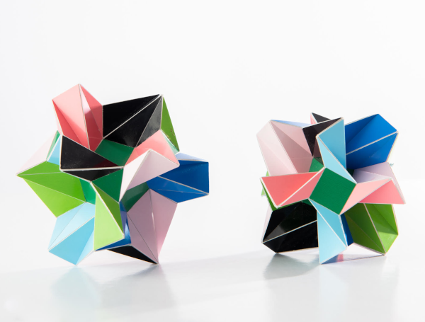

Little Brother and Sister

Picture copyright by PhotoArt Studio Hörby
These models were built in 2013 and their maximum dimensions are 8.5 cm x 8.5 cm x 8.5 cm.
These polyhedra consist of regular heptagons that are allowed to be folded over diagonals. There are different ways in which you can fold a regular heptagon and for these polyhedra the folding is done in a 'W' shape.
Both polyhedra are quite similar and quite different at the same time. Around one type of symmetry axis the heptagons are arranged around the regular squares or triangles as a dish, while for the other type of symmetry axis they are aranged as a propeller. In both the models the role of the axes are exchanged. These models have the rotational symmetries from a cube (or octahedron). A same kind of pair can be found for the dodecahedron (or icosahedron) symmetry. Models of those can be found here.
I think they both have a pleasing shape and they form a nice pair. The choice of which one is brother and which one sister is based on the following: the propeller with three blades reminds me of a Y chromosome (brother) while the one with four reminds me of an X chromosome (sister).
Last Updated
2022-01-10